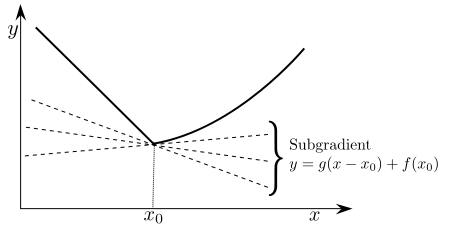
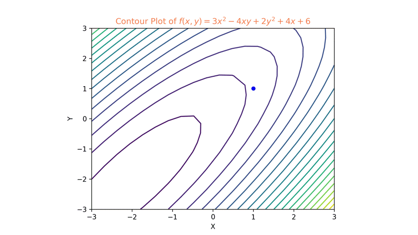

Peter Ma | June 14th 2026
Open the feedback form (new tab). I use responses to improve this module for new students. If your comments are about this page, choose Nonlinear Optimization in the first question.
Work through this companion notebook while you read: open the Colab worksheet (new tab). Sign in with a Google account if Colab asks; then use File → Save a copy in Drive if you want your own editable version.
Who these notes are for. If you have taken something like AP Calculus (or an equivalent first-year calculus course), you already bring a lot to the table: you are comfortable with functions, derivatives, and basic optimization. You do not need to have seen a full optimization or numerical methods course. This page is meant to onboard you into the vocabulary ML and physics papers use: gradients, Hessians, Lagrange multipliers, convexity, and common optimizers, so the rest of the lab feels less like alphabet soup. It builds on the companion multivariable calculus primer and linear algebra primer; wherever you see a blue link like this in the text, it jumps to the matching section there.
How to read it. Go at your own pace. When a paragraph feels heavy, try working through the examples on paper, peek at a picture or diagram, or ask a tool (blue) for a second explanation in different words. This is not a substitute for a real optimization course; it is a friendly on-ramp so you can read code and papers and ask sharper questions.
Red \(=\) stop and think / work on question
Blue \(=\) centered boxes tagged Ask AI placed near new ideas; paste the prompt into ChatGPT or another tool for a second explanation.
Why Non-Linear Optimization?
When you first open a deep learning codebase, a huge fraction of what the machine is actually doing hides behind one word: optimize. The loss function, the learning rate, Adam vs. SGD, weight decay, constrained fine-tuning: these are all nonlinear optimization ideas are all the SAME THING.
Here is why this matters. Learning is optimization. Training a model means searching over parameters, sometimes billions of them, for settings that make a loss small. Designing a rocket trajectory, pricing a portfolio under risk limits, fitting a physical law to noisy data, or compressing an image: same core question, posed in different language. What choice of inputs gives the best outcome, subject to the rules of the problem? Nonlinear optimization is the shared mathematical language behind all of it, from engineering and finance to physics and machine learning.
Calculus gives you the one-dimensional picture, and it is an ok one. But the real world has multiple variables, saddle points, boundaries you cannot cross, objectives that are not smooth everywhere and the simple recipe breaks. That is not a failure of calculus; it is the sign you have moved into the regime where essentially all of modern ML lives. The rest of this page builds the vocabulary for that regime: gradients and Hessians, Lagrange multipliers, convexity, and the optimizer algorithms (SGD, momentum, Adam) you will see in every framework.
Recap: Optimization in 1-D
Thinking back to high school calculus, the picture you were likely presented was pretty simple. For any differentiable function \(f(x)\), we can find candidate optimal points \(x^*\) by taking the derivative and setting it equal to zero: \[\frac{d}{dx} f(x) = 0\] To determine whether a candidate is a minimum or a maximum, we computed the second derivative to check the curvature: \[\frac{d^2}{dx^2} f(x) > 0 \Rightarrow \text{min}\] \[\frac{d^2}{dx^2} f(x) < 0 \Rightarrow \text{max}\] \[\frac{d^2}{dx^2} f(x) = 0 \Rightarrow \text{none (saddle point)}\] Okay, great: simple! What makes this so hard, anyway?
Well, life is not so simple. Here are some of the problems:
- What is the global optimal point? Is there even a global optimal point?
- What if we have constraints? (For example, what if \(x\) must be \(>1\)? How do we fold that in?)
- What happens if we have more than one variable?
- What happens if my function is not differentiable everywhere?
Many of these problems become sharper in higher dimensions, because there are many more ways for optimal points to trick and deceive you.
For example, consider the function \(f(x,y) = x^2-y^2\). This may look simple; you might think that \((0,0)\) would be an optimal point since it looks like two quadratics smooshed together. However, it is actually neither. Along the \(x\)-axis it looks like a regular upward-facing quadratic, while along the \(y\)-axis it faces downward. Together, the point forms a saddle point. In higher dimensions, it gets even easier to be fooled.

Thankfully, many smart people have been thinking about these problems and have developed some good solutions.
Some tools we need
First Order Taylor Series: which can be derived from the Mean Value Theorem (MVT). Here we say that \(v\) is a small vector shift from \(x\), and \(\mathcal{O}(|v|)\) represents all the higher-order terms. \[f(x+v) = f(x) + \nabla f(x) \cdot v + \mathcal{O}(|v|)\]
Second Order Taylor Series: which can be derived by applying the Mean Value Theorem (MVT) to the first-order Taylor series. Again, \(v\) is a small vector shift from \(x\): \[f(x+v) = f(x) + \nabla f(x) \cdot v + v^T \nabla^2 f(x) v + \mathcal{O}(|v|)\]
\(\nabla f\) is the steepest ascent: the gradient points in the direction of largest increase in \(f\). How do we know? Let's show this. Consider a point \(x\) of function \(f(x)\). What we want to show is that for any direction \(v\) (a vector) we move away from \(x\), \(v\) must align with \(\nabla f\) if we want to maximize the change. How do we show this? Let's use the first-order Taylor series! \[f(x+v) = f(x) + \nabla f(x) \cdot v + \mathcal{O}(|v|)\] Let's make \(v\) small by scaling it by a single number \(h\): \[\lim_{h \to 0} f(x+hv) = \lim_{h \to 0} f(x) + \nabla f(x) \cdot hv + \mathcal{O}(|hv|)\] Since \(h\) is small, we can drop the higher-order terms by Taylor's theorem: \[\lim_{h \to 0} f(x+hv) = \lim_{h \to 0} f(x) + \nabla f(x) \cdot hv \] Move it to the left-hand side: \[\lim_{h \to 0} f(x+hv) - f(x) = \lim_{h \to 0}\nabla f(x) \cdot hv \] Divide by \(h\): \[\lim_{h \to 0} \frac{f(x+hv) - f(x)}{h} = \nabla f(x) \cdot v \] Whoa, this looks like a derivative in one dimension! We can do this: \[\frac{d}{dh} f(x+hv) = \nabla f(x) \cdot v\] Nice! Remember, we want to maximize the left-hand side. The left-hand side is really saying \(f(x+hv) - f(x)\), and we want to make this change as large as possible. How would we then pick \(v\)? \[\overbrace{\frac{d}{dh} f(x+hv)}^{\text{max!}} = \nabla f(x) \cdot v\] Well, recall from linear algebra that the right-hand side is a dot product, which can be written in the following form: \[\frac{d}{dh} f(x+hv) = |\nabla f(x)| |v| \cos\theta \] The largest possible value occurs when \(\cos \theta = 1\), and that only happens when \(\theta = 0\) or \(\theta = 2\pi\); in both cases, \(v\) is parallel to \(\nabla f\) and points in the same direction. This means that the greatest step of improvement comes from following the same direction as \(\nabla f\)! \[\boxed{\nabla f \text{ is the steepest ascent}}\] This is absolutely critical and is at the heart of what allows us to make machines learn. Deeply understand this.
A visual explanation of why the gradient points in the direction of greatest increase.
Unconstrained Optimization
This is the simplest possible setup for optimization: no constraints. That means we just want the largest or smallest \(f\) value, and the goal is to find any possible \(x\) that gives us this (no constraints on what \(x\) can be). Mathematically, we write "argument max" or \[\text{argmax}_x f(x) = x^*\] Here \(x^*\) is the optimal point. First, to simplify life: solving for a minimum and solving for a maximum are the same thing, except you flip the sign of the function you are optimizing over. That means we can focus on good maximization techniques, and the same ideas transfer to minimization as well :) \[\text{argmin}_x f(x) = \text{argmax}_x -f(x) \]
First Order Necessary Condition
Theorem: for a point \(x\) to be a candidate for an optimal point \(x^*\), it must have the following property:
For every feasible direction \(v\) (for unconstrained problems, a feasible direction is just any direction), a point \(x^*\) is considered a local minimizer if and only if, for all possible \(v\), we have \(\nabla f(x) \cdot v \geq 0 \).
Let us see how this could be true. We know from before that \(\nabla f\) is the direction of steepest ascent. From our previous derivation, we saw that any small change in \(x\) in any direction \(v\) yields this difference: \[\lim_{h \to 0} \frac{f(x+hv) - f(x)}{h} = \nabla f(x) \cdot v \] If \(\lim_{h \to 0} \frac{f(x+hv) - f(x)}{h} \geq 0\) always, that means in any direction you go, \(f(x+hv)\) will always be larger than where you are, so you are in a minimum well. This is how we got \[\lim_{h \to 0} \frac{f(x+hv) - f(x)}{h} \geq 0 \Rightarrow \nabla f(x) \cdot v \geq 0\]
Hold on a second: this all sounds strange, doesn't it? I bet you were expecting \(\nabla f(x^*) = 0\), weren't you? Turns out they mean the same thing (when \(x\) is not on the boundary of the set)! Except this definition is far more generalizable, because it allows us to also define constrained optimization later on when we restrict \(v\) to only certain allowable directions. However, for all intents and purposes, just think of upgrading our old one-dimensional definition to our new shiny multidimensional definition: \[\frac{d}{dx}f(x) \Rightarrow \boxed{\nabla f(x^*) = 0 } \]
Second Order Necessary Condition
Just as we needed to compute \(\frac{d^2}{dx^2}f(x)\) to determine whether we found a local max/min and whether the value is a saddle point, we also use a very similar procedure called the second-order necessary condition.
For \(x\) to be a local min, we require that for all feasible directions \(v\), \[v^T \nabla^2 f v \geq 0\] This follows directly from the second-order Taylor series equation. This is analogous to saying \[\frac{d^2}{dx^2}f(x) \geq 0 \Rightarrow \boxed{\nabla^2 f(x^*) \geq 0 } \] Hold on... \(\nabla^2 f(x^*) \) is a matrix? What does it mean for a matrix \(\nabla^2 f(x^*) \geq 0\)? It means that the matrix needs to be positive semi-definite. All this is saying is that the matrix needs to have all eigenvalues \(\lambda\) greater than or equal to \(0\).
A walkthrough of the first- and second-order optimality conditions in action.
Constrained Optimization
You are likely pretty familiar with the fact that sometimes the domain we optimize over has constraints. For example, if you are optimizing a company for profits, you are likely constrained by the amount of materials you can buy or the number of workers available.
So far in our journey we have not touched on those kinds of problems. Let's look at a simple one-dimensional case of such an optimization problem: \[\min f(x) = x^2 , \quad x \geq 2\]. How would you approach this? You would probably compute the derivative and find the optimal point without the constraint, get \(x=0\), and then notice that it is not within your constraints. So you evaluate the boundary point \(x = 2\) and easily verify that it is indeed the smallest value.
A more formal way to approach this is via the feasible direction method. Once again, you will notice that when \(x=2\), the only feasible direction is \(x+v\) with \(v>0\). It is easy to verify that \((x+v)^2 > x^2\), and thus \(x=2\) is a local minimum. Great.
However, you can clearly see that this is painful. Why? You have to evaluate boundary points, think about feasible directions, and handle all that extra work. Life was so much better when you could just take a derivative, set it equal to zero, and solve... boom, you're done. Formulaic, easy, and straightforward.
Does that exist for constraint problems? Yes. Welcome Lagrange Multipliers!
Equality Constraints
I will first describe this magic trick to you, and then I will explain how it works. Given a function \(f(x)\) that you wish to optimize over, with some functional constraint \(h(x)=\text{constant}\), it is equivalent to finding the optimal value by solving \[\nabla f(x, y) + \lambda \nabla h(x,y) = 0\] where \(\lambda\) is a number called the Lagrange multiplier, and it is something that you need to find. Let us try an example.
Example: Consider the volume of a cube \(f(x,y,z) = xyz\). How can we find the side lengths \(x,y,z\) such that it has the maximum possible volume if its surface area \(h(x,y,z)\) needs to equal \(A\)? \[f(x,y,z) = xyz,\quad h(x,y,z) = 2xy+2xz+2yz = A \] Given the formula from above, it is equivalent to minimizing (notice the negative sign: now we are minimizing!) \[\nabla -f(x, y) + \lambda \nabla h(x,y) = 0\] \[\begin{bmatrix}-yz \\ -xz \\ -yx \end{bmatrix}+ \lambda \begin{bmatrix}2z+2y \\ 2x+2z\\2x+2y\end{bmatrix} = 0\] We now need to solve for this Lagrange multiplier \(\lambda\). But how? We see we have 4 unknowns but only 3 equations? You are wrong! There are 4 equations if you include the constraint \(2xy+2xz+2yz = A\). Now we just try and solve \[2\lambda \begin{bmatrix}z+y \\ x+z\\x+y\end{bmatrix} = \begin{bmatrix}yz \\ xz \\ yx \end{bmatrix}\] We get that \(x=y=z\). This makes perfect sense! The optimal volume-filling rectangular prism with the smallest surface area is indeed a cube.
A worked example of solving a constrained problem with Lagrange multipliers.
How Lagrange Multipliers Work (extra)
The constraint here, \(h(x) = 0\), ultimately defines a manifold, given that \(h\) is smooth and whatnot. \(M = \{\forall x \in \mathbb{R}^n | h(x) = 0\}\).
We can then define a parameterized differentiable curve \(X(s)\) on that manifold that maps some interval \((a,b) \to M\), the manifold. This sets us up to define the tangent vector at \(a\in M\), denoted as \(v_a\), as something like \(v_a = \frac{d}{ds}|_{s=0}X(s)\) where \(X(0) = a\).
We can then define the tangent space of the manifold at \(a\) as \(T_a M\), which includes all the possible vectors \(v_a\) from all possible curves running through \(a\).
We can also define a local linearized space \(T_a = \{\forall v \in \mathbb{R}^n | v \cdot \nabla h(a)= 0\}\)
Regular point: a specific point where \[T_a M = T_a\] This says that the linearized feasible-direction space is exactly equal to the tangent space of the manifold. In other words, regular points are places where we can actually linearize the behavior at those locations.
You might be wondering... then don't all smooth functions have regular points? That's a good question! Most manifolds have regular points. There is a theorem called Sard's theorem that states the critical points (irregular points) form a set of measure zero, and thus most points are regular.
We can more conveniently write \(T_a = \text{span}\{\nabla h_1(a) \cdots \nabla h_n(a)\}^\perp\)
This is a lot of talk, but why are regular points special? It turns out that the optimal point is when the gradient is perpendicular to the tangent space! \[\boxed{x^* : \nabla f(x^*) \perp T_{x^*}M}\]
Why is this the case? Well, remember our definition of feasible directions. The feasible directions are locked in by the directions along any curve: \[\nabla f(x^*) \cdot v \Rightarrow \nabla f(X(0)) \cdot \frac{d}{ds}|_{s=0}X(s) \] Great. Since we know that they are perpendicular, \[\nabla f(X(0)) \cdot \frac{d}{ds}|_{s=0}X(s) = 0 \] \[\nabla f(x^*) \cdot v =0 \] thus optimal!
Okay, so if \[x^* : \nabla f(x^*) \perp T_{x^*}M\] then \[x^* : \nabla f(x^*) \perp T_{x^*}\] which means that \[x^* : \nabla f(x^*) \in T_{x^*}^\perp\] \[x^* : \nabla f(x^*) \in (\text{span}\{\nabla h_1(a) \cdots \nabla h_n(a)\}^\perp)^\perp\] \[x^* : \nabla f(x^*) \in \text{span}\{\nabla h_1(a) \cdots \nabla h_n(a)\}\] This gives birth to the Lagrange multipliers: \[\boxed{\nabla f = \lambda \nabla h}\]
Intuition: Imagine you walk along a path on a hill, trying to climb upward while restricted to that path. You know how the hill around you changes (\(\nabla f\)), and you also know the direction along the path you take (\(\{\nabla h\}^\perp\)). You will only stop climbing when the trail completely stops going uphill. At that exact, perfectly level moment, the steepest-uphill arrow points straight into the sky, completely 90 degrees (perpendicular) to the flat ground of your trail. Because there is no shadow cast along the path, there is no mathematical incentive to move forward or backward.
Inequality Constraints
You might be wondering: okay, now what about inequality constraints? What happens when you are not stuck on some manifold but restricted by it at the boundary? For example, \[\min f(x) \quad h(x) \leq 0\] What do we do now? Before we had \(h(x) =0\). It turns out we still use the same formulation as before; however, instead of setting \(h(x) =0\), we now have something called slackness. The game now is the following. We solve for \[\nabla f(x) + \lambda \nabla h(x) = 0\] Then you have a special equation called complementary slackness. This says you have two choices: either you are on the manifold \(h(x) =0\), or you are within the boundary \(h(x) < 0\). If you are on the manifold \(h(x)=0\), then you have an active \(\lambda \neq 0\). When you are not on the manifold \(h(x) < 0\), then \(\lambda = 0\). Either way, the multiplication gives you 0! \[\lambda h(x) = 0\] Lastly, you have to check your constraints again: \[h(x) \leq 0\] \[\lambda \geq 0\] When doing this by hand, you have to solve the problem by splitting it into two hypothetical "cases" and seeing which one does not break the rules!
What happens when you have multiple constraints? Or equality and inequality constraints?
If you have more than one equality constraint, you need to add up the Lagrange multipliers: \[\nabla f + \lambda_1 \nabla h_1 + \lambda_2 \nabla h_2+\cdots \]
If you have more than one inequality constraint, you need to repeat the process for when each is active and each is inactive, as well as when all of them are active and none of them are active... (four different cases!)
What happens if you have a mix of inequality and equality constraints? You still add up the Lagrange multipliers!
Duality
Duality is something you will likely come across in optimization papers. It has been a topic that always seems to confuse me, but fundamentally it is about a perspective shift. There is something called a primal problem and a dual problem.
The primal problem is the original problem. Say you are studying for a final exam. Goal: maximize points on the exam. Variables: time spent studying each subject. Constraint: you have 12 hours of studying time available. Simple.
The dual problem is the same problem, but with a flipped perspective. Let's say there is a tutor who is willing to take the test for you and can guarantee a score based on how much you pay them. Their goal is to offer you a price low enough (give you a good deal) that it makes no sense to study on your own, and you will pay them instead. The tutor's variables are the prices they charge.
Why do we care? It turns out sometimes solving the dual problem is much easier than solving the primal problem computationally speaking. This creates some cool tricks that one can do to make optimization problems solvable! We won't go more indepth but just so you know what duality means.
Convexity
Convexity, or convex sets and functions, is something you will hear super often in the world of optimization. They are important because convex functions are the only functions for which we know how to solve for a global optimal point. That's why they are a big deal. If we know a function is convex and its domain is a convex set, then we know we have all the mathematical tools to get the best possible solutions. Even more magically, any optimal point you find for a convex optimization problem is guaranteed to be the global best optimal point. This makes life really nice for us with these strong guarantees. Let's see what convexity is all about.
First, a set \(\Omega\) is considered a convex set if \(\forall x,y \in \Omega\) there exists a straight line connecting the two, and every point on that line is also contained in the set.
Now the formal definition of a convex function is on a convex set \(\Omega\): \[f \text{ is convex } \Leftrightarrow \forall \theta\in [0,1], x,y \in \Omega: f(\theta x+(1-\theta)y) \leq \theta f(x) + (1-\theta)f(y)\] Okay, what does this mean?
In simple terms, it says that for every point on a line connecting \(x \to y\), when mapped by \(f\), it lies below the line that connects the two points \(f(x), f(y)\). See the diagram below.

You see how all the points on the round curve from \(x \to y\) are below the straight line \(f(x) \to f(y)\)? That means this function is convex.
Hold on: you are probably thinking that this seems like a glorified definition for a function that opens upward like a quadratic. Why is this definition needed?
It turns out that this generalizes the idea of opening "upward" without relying on the function \(f\) being differentiable or even continuous. In fact, in computer science, this idea is often used to optimize over discrete problems and give us solution guarantees.
Even for problems that are non-convex, like many machine learning problems, they can typically be broken down into locally convex problems for us to deal with. This is what allows us to study different optimizer strategies.
Start with convex sets, then watch the follow-up on convex functions.
Non-differentiable Optimization
What happens when we want to optimize over non-differentiable functions that are convex? Things like piecewise functions where they are continuous but have a cusp? We know that optimal points exist, but how would we find them? We can generalize the idea of a gradient to a subdifferential.
Subdifferential
A subdifferential \(\partial f\) is not just a single vector anymore; it is a set of vectors called subgradients. These subgradients \(v\) are defined as \[\forall x, f(x)-f(x_0) \geq v (x-x_0) \] All this does is collect the lines that hug just below the cusp.

We can see that when the function has normal derivatives, the set becomes just the derivative. \[f(x) = x^2, x_0 = 1 \Rightarrow v = 2\]. However, when there is a cusp, the gradient can have multiple lines that fulfill that criterion.
How to optimize?
To actually find the optimal location, instead of doing \(\nabla f =0\), we just look for when \(0 \in \partial f\). Only at the cusp where we have a local minimum do we actually obtain a zero vector as a subgradient within the subdifferential!
A visual explanation of subdifferentials and optimizing non-differentiable functions.
Function Optimization - Calculus of Variations (Extra)
Sometimes we do not care about a particular optimal value. Sometimes, we care about an optimal function.
Wait... why would this ever be useful? Well, think about the real world.
We often say that when electricity travels, it travels along the path of least resistance. Or that when light travels, it travels on the path of shortest distance. These are all minimization problems. However, they are different in that the optimal thing is not a "point," but instead a function. This is where the calculus of variations comes in.
Let us consider the simple distance functional from our calculus class. How would we calculate the distance along the curve \(u\)? \[\mathcal{D}[u] = \int_a^b u(x(t),y(t)) \sqrt{x'(t)^2+ y'(t)^2}dt\] A natural question becomes: what should \(u\) be when we want to minimize the distance \(\mathcal{D}\)?
This is exactly what the calculus of variations does. We extend the idea of the derivative (called the Euler-Lagrange derivative) and set it equal to zero.
The Euler-Lagrange equations
Let's be a bit precise here. In the calculus of variations, we have a special kind of map called a functional that takes in functions and sends them to a number (like that distance metric). \[\mathcal{F} : \mathcal{A} \to \mathbb{R}\] where \(\mathcal{A} = \{u: [a,b]\to \mathbb{R} | u \in C^1, u(a) = A, u(b)= B\}\) is a set of functions that map from an interval to a number and are differentiable. An example of this functional is \[\mathcal{F} [u(\cdot)] = \int_a^b L(t, u(t),u'(t))dt\] Here \(L\) can be any kind of function; in the distance example, \(L = u(t) \cdot |u'(t)|\).
Now we define the Variational Derivative as the following: we recall that the derivative for a general function in the direction of \(v\) \[\frac{d}{ds}|_{s=0} f(x+sv)\] Let us upgrade this to functions, \(u,v \in \mathcal{A}\) are all functions. \[\frac{d}{ds}| _{s=0} \mathcal{F}[u+sv] = \frac{d}{ds}|_{s=0} \int L(t, u+sv, u'+sv')dt\] We move the derivative inside \[ = \int \frac{d}{ds}|_{s=0}L(t, u+sv, u'+sv')dt\] Compute chain rule \[ = \int \cancel{\frac{d}{dt}L \frac{dt}{ds}} + \frac{dL}{d(u+sv)} \frac{d(u+sv)}{ds} + \frac{dL}{d(u+sv)'} \frac{d(u+sv)'}{ds} dt\] \[ = \int \frac{dL}{d(u+sv)} \frac{d(u+sv)}{ds} + \frac{dL}{d(u+sv)'} \frac{d(u+sv)'}{ds} dt\] We can simplify call \(z =u+sv \) and \(p = (u+sv)'\) \[ = \int \frac{dL}{dz} \frac{dz}{ds} + \frac{dL}{dp} \frac{dp}{ds} dt\] compute \(\frac{dz}{ds} = v\) and \(\frac{dp}{ds} = v'\) \[ = \int v\frac{dL}{dz} + v'\frac{dL}{dp} dt\] We make a short hand notation \[ = \int vL_z + v'L_p dt\] We can do integration by parts, \(\int u\,dv = uv - \int v\,du\), targeting \(\int L_p v'\,dt\): \[\int L_p v'\,dt = \cancel{L_p v} - \int \frac{d}{dt}L_p\, v\,dt\] which gives \[ = \int v\frac{dL}{dz} - \int \frac{d}{dt}L_p\, v\,dt\] \[ = \int \left(\frac{dL}{dz} - \frac{d}{dt}L_p\right) v\,dt\] Remember, this is the generalized gradient. What do we do when we want to optimize? Set the derivative equal to zero! \[\int \left(\frac{dL}{dz} - \frac{d}{dt}L_p\right) v\,dt = 0\] We know that for this to be optimal, the gradient must be zero along every direction of \(v\), and thus the integrand must be zero: \[\boxed{\frac{dL}{dz} - \frac{d}{dt}L_p = 0} \] Take a moment. It turns out that this Euler-Lagrange equation is perhaps one of the most fundamental concepts in almost all of physics.
Using the Euler-Lagrange equation, we can rederive all of Newtonian mechanics. The foundations of quantum mechanics, electrodynamics, special relativity, and nuclear forces can all be unified within this formalism.
Optimization Algorithms
Given all of these problems, you are probably wondering: what algorithms are used to solve these kinds of optimization problems? How do computers, and eventually deep learning algorithms, actually solve these problems?
Gradient Descent Method
Gradient descent is the bread-and-butter method for optimizing over a differentiable function. It is simple and intuitive. The algorithm goes as follows: \[\boxed{x_{k+1} = x_{k} - \alpha_k \nabla f(x_k)} \] First, we need to show that for a choice of \(x_k\), there exists an \(\alpha_k\) such that \(f(x_{k+1}) \leq f(x_k)\). For example, if we look at a small perturbation from the Taylor series, \[\lim_{\alpha \to 0}\frac{f(x_k)-f(x_k - \alpha \nabla f(x_k))}{\alpha} = \frac{d}{d\alpha}|_{\alpha = 0} f(x_k - \alpha \nabla f(x_k)) = \nabla f(x_k) \cdot \nabla (-f(x_k))\] \[\lim_{\alpha \to 0}\frac{f(x_k)-f(x_k - \alpha \nabla f(x_k))}{\alpha} = - ||\nabla f(x_k)|| \leq 0 \] This means taking a step in that direction will make the function value smaller than where you started. \[\boxed{f(x_{k+1}) \leq f(x_k)}\]
However, gradient descent is inefficient. Why is this the case? It turns out that for quadratic problems, or least-squares-like problems, the optimizer traverses orthogonal paths toward the minimum, which wastes travel time and is not a straight line down the valley. See the plot below.

How do we know it behaves this way? It is easy to show! We know that the direction it travels is \[d_k = \nabla f(x_k)\] We also know that the update rule is \[x_{k+1} = x_{k} - \alpha_k \nabla f(x_k)\] For the most efficient algorithm, we pick \(\alpha_k = \text{min}_{\alpha_k} f( x_{k} - \alpha_k \nabla f(x_k))\), so we exploit the steepest possible descent along the line \(\nabla f(x_k)\). \[ \frac{d}{d\alpha_k} f( x_{k} - \alpha_k \nabla f(x_k)) = 0 \] \[ \nabla f( x_{k} - \alpha_k \nabla f(x_k))\cdot \nabla f(x_k) = 0 \] We can then replace \[ \nabla f( x_{k} - \alpha_k \nabla f(x_k))\cdot d_k = 0 \] \[ \nabla f( x_{k+1})\cdot d_k = 0 \] \[ \boxed{d_{k+1}\cdot d_k = 0 \Rightarrow \text{most effective descent is orthogonal}}\] To solve this inefficiency, later on we will introduce the idea of momentum.
Lastly, what we want to show for the gradient descent method is that there is some kind of convergence guarantee for certain functions, namely a quadratic problem. First, let us find the most optimal value of \(\alpha_k\) for each iteration.
Remember, on each iteration we want to select \(\alpha_k\) such that we minimize \(f(x_k + \alpha_k \nabla f(x_k))\). To do so, we compute the derivative with respect to \(\alpha_k\) and set it equal to zero: \[\nabla f(x_k+\alpha_k \nabla f(x_k)) \cdot \nabla f(x_k) = 0 \]
We know that for quadratic setups \(f(x_k) = 1/2(x_k-b)^TQ(x_k-b)\), where the minimum point is \(x=b\). Then we can write \(g(x_k) = Qx-b\) for the gradient: \[\nabla f(x_k+\alpha_k g(x_k)) \cdot g(x_k) = 0 \] plug in \(g\) \[g(x_k+\alpha_k g(x_k) ) \cdot g(x_k) = 0 \] plug in \(g = Qx-b\) \[(Q(x_k+\alpha_k g(x_k) ) - b) \cdot g(x_k) = 0 \] \[(Qx_k+\alpha_k Qg(x_k) - Qb) \cdot g(x_k) = 0 \] \[(Q(x_k-b)+\alpha_k Qg(x_k)) \cdot g(x_k) = 0 \] \[(Q(x_k-b) = - \alpha_k Qg(x_k)) \ \]
A few different takes on gradient descent, from intuition to the machine learning perspective.
Conjugate Gradient Method
To do better than classical gradient descent, we introduce the conjugate gradient method for optimizing least-squares-like problems.
Let's think about it this way: if you live in a two-dimensional world, it should really take you only two steps to find the most optimal location. However, the gradient descent algorithm can take many, many steps, especially when the problem is ill-conditioned (large, narrow valleys). This is because not all steps are actually independent from each other (fixed learning rate).
What we need to do is take orthogonal steps that are orthogonal to the shape of our loss landscape, not the traditional orthogonal \(u\cdot v = 0\), but conjugate orthogonal.
Let us start with the idea of conjugates. We say that \(u,v\) are conjugate with matrix \(Q\) if \[u^T Q v = 0\] Our goal for our new optimizer is to traverse in directions such that they are \(Q\) orthogonal. Where \(Q\) is the matrix in our least squares problem, which defines the shape of our valley.
Remember that the least squares problem looks something like this \[\min f(x) = x^T Qx - b\]
Great: how do we do this iteratively? First, we need to measure how far off our current guess is from the true solution: \[r_k = b- A x_k\] Then remember we want to walk in "special" directions called \(p_k\), where the directions are orthogonal to the residuals [this is an example of Gram-Schmidt orthogonalization]: \[p_k = r_k - \sum_i \frac{r_i^T A p_i}{p_i^T A p_i}p_i\] We update \[x_{k+1} = x_k - \alpha_k p_k\] where \(\alpha_k\) is like a renormalization of the \(p_k\) vectors: \[\alpha_k = \frac{p_k^T r_k}{p_k^T A p_k}\] It is derived by minimizing along the direction \(p_k\).
By construction, iterating through a \(Q\)-orthogonal basis guarantees that this will converge in at most the number of dimensions in the problem, much more efficient than gradient descent.
A visual walkthrough of why conjugate directions converge so much faster.
Machine Learning Optimization Algorithms
In recent years, there has been a massive race to build higher-powered, specialized optimizers to train deep neural networks. Nowadays, the optimization landscape of a neural network appears trivial. However, that is standing on the shoulders of many giants who have helped make great leaps in nonlinear optimization to achieve the capabilities we see today. Training the models we have today 10 years ago would have been nearly impossible. We now walk through a timeline of those critical developments.
Stochastic Gradient Descent
When you are optimizing over a summed objective function (for example, summing over all the error across multiple training data samples), the training data can be statistically noisy. \[Q(w) = \frac{1}{n}\sum_{i}^nQ_i(w)\]
Stochastic gradient descent is when you do gradient descent but use one random sample of the data to estimate the gradient instead of using the summed-up gradients. \[\nabla Q(w) \sim \nabla Q_i(w)\] and thus the algorithm is \[w_k = w_{k-1} - \alpha \nabla Q_i(w_{k-1})\]
Why? Why would we do such a seemingly foolish thing, throwing away all that extra data?
Pros: it is more robust against local optima. It is much faster (fewer gradients) and has lower memory constraints. It prevents overfitting, because the model never learns to settle in sharp minima. (Sharp minima are geometrically less robust, because perturbations in input data can yield large changes in loss and are thus not robust.)
Cons: it suffers from the same problem as gradient descent in that it does not always take the most optimal path toward the solution, even given a very simple loss landscape. (It traverses in orthogonal directions.)
Stochastic Gradient Descent with Momentum
SGD with momentum tries to solve the issue with these redundant orthogonal traversals by keeping an exponentially weighted memory of previous gradients, where \(\gamma < 1\), usually \(\gamma \sim 0.99\): \[g_k = \gamma g_{k-1} + (1-\gamma) \nabla Q_i(w_{k-1})\] We see that we overweight the old trailing sum of gradients and only slowly add the new gradient into the total weighted gradient. \[w_k = w_{k-1} - \alpha g_k\]
Pros: it carries all the benefits of the previous SGD method, but now there is a higher chance it stays in the correct direction of travel instead of following orthogonal tracks within a valley.
Adaptive Gradient Descent (AdaGrad)
In AdaGrad, for parameters with frequent, large updates, the accumulated sum grows quickly, shrinking their learning rate. For parameters with infrequent or sparse updates, the sum remains small, keeping their learning rate high. \[S = \nabla Q_i(w_{k-1})^2 + S\] \[w_k = w_{k-1} - \frac{\alpha}{\sqrt{S}} \nabla Q_i(w_{k-1})\]
Pros: we are now able to downweight and scale the gradient updates if there has been historically large variation in the changes, and reward sparse, slow changes.
RMSProp Method
In RMSprop, we want to address a cold-start problem in AdaGrad. At the very start, we trust the estimated values much less, and gradients get pushed around a lot. This affects the statistics of later runs, so we downweight them. \[S = (1-\gamma) \nabla Q_i(w_{k-1})^2 + \gamma S\] \[w_k = w_{k-1} - \frac{\alpha}{\sqrt{S}} \nabla Q_i(w_{k-1})\]
Pros: we resolve the cold-start issue as mentioned and retain the benefits of AdaGrad.
Adam (Adaptive Moment)
We can try to combine all of these together! \[m_1 = (1-\gamma_1) \nabla Q_i(w)^2 + \gamma_1 m_1\] \[m_2 = \gamma_2 m_2 + (1-\gamma_2) \nabla Q_i(w)\] Each of these is calculated and called a moment. We need a bias correction from these moments. Because both of those trackers start at exactly zero, RMSprop on its own has a dangerous tendency to divide by near-zero during the first few training steps. Adam adds a decaying mathematical correction factor to keep the first few steps completely stable while the trackers "warm up." \[m_1 = \frac{m_1}{1-\gamma_1^k}\] \[m_2 = \frac{m_2}{1-\gamma_2^k}\] And then we can apply the same update as before: \[w_k = w_{k-1} - \frac{\alpha }{\sqrt{m_1}} m_2\]
Pros: we add the benefits of the past methods, and now we add momentum. Basically RMSProp, but with momentum.
Cons: this is very memory-intensive to keep track of all of these for every parameter, especially when training large models. The coefficients need to be tracked effectively, tripling the total memory consumption. Also, regularization losses have a hard time being updated. Why? The moving average consumes the weight penalties. If a parameter has highly volatile gradients, its variance denominator is huge. Therefore, the regularization penalty applied to that weight shrinks to almost zero. The weights that are the most chaotic and most likely to overfit are the exact ones Adam fails to regularize.
AdamW (Adaptive Moment with Weight Decay)
One of the issues with Adam is regularization coupling. All we do is manually decouple the regularization term in the loss function from the moving average and get the new update rule: \[w_k = w_{k-1} - \frac{\alpha }{\sqrt{m_1}} m_2 - \alpha \lambda w_{k}\]
AdaFactor
AdaFactor introduces the idea that we can matrix-factor the coefficients that we are tracking. How does it factor them? It marginalizes (sums) across columns or rows to get column or row vectors. Then the moving average is determined via the columns and rows. Together, when we need to update the actual weights, we matrix-multiply to get back the full coefficients to use. Otherwise, it performs exactly the same as Adam!
Muon
Muon is the current bleeding edge of optimizers used to train some of the largest LLMs possible on current hardware. Muon is shown to converge much faster than traditional optimizers like Adam and AdamW, and can be made memory-efficient like AdaFactor.
Muon specifically works to be really good at optimizing linear layers. It operates under the idea that the gradients when using normal gradient descent overwhelmingly update gradients in a few specific directions. If you compute the SVD of the gradient update, you will find that most features crash to zero except a few singular values.
The breakthrough is realizing we can better normalize and rotate the gradient updates to value more of the parameter space geometrically by orthogonalizing the gradient update. This is done via \[M_t = M_t (M_t^T M_t)^{-1/2}\] This transforms the matrix such that its singular values are all close to 1, and thus each parameter is "updated" as much as the others (geometrically speaking).